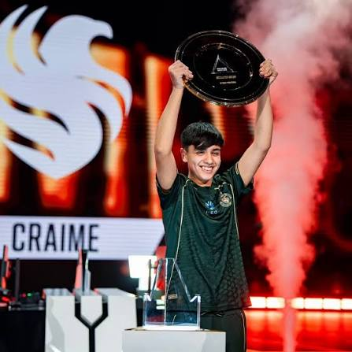
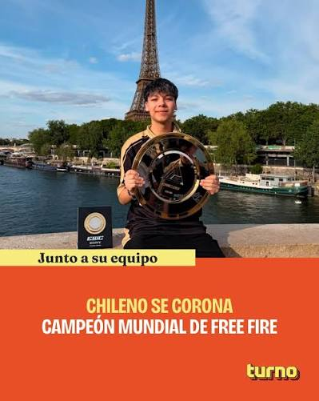
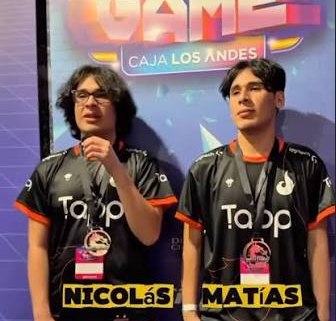
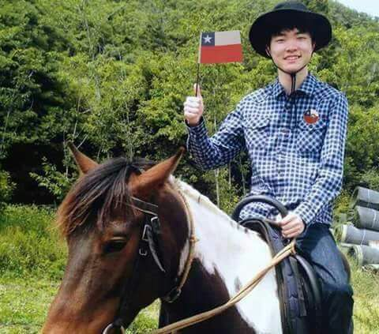

Los principales representantes del gaming chileno actual
Los exponentes más destacados del gaming y los deportes electrónicos (esports) en Chile incluyen a campeones mundiales y referentes históricos en torneos internacionales de juegos de pelea y estrategia.
Principales exponentes en Esports y Competencia
-

Jaime "Craime" Díaz Bustos
Street Fighter 6Con solo 15 años, se consagró campeón mundial de Street Fighter 6 en la Esports World Cup 2026 en París, convirtiéndose en el ganador más joven de la historia de este torneo.
Fuente: Instagram
-

Benjamín "GamezKing" Pérez
Free FireEl máximo referente y campeón mundial chileno de Free Fire, oriundo de Ovalle.
Logros destacados
- Campeón Mundial: ganó la Esports World Cup 2026 en París junto al equipo LYON.
- MVP del Torneo: fue elegido como el mejor jugador de todo el campeonato mundial.
- Premio: obtuvo un reconocimiento histórico y un galardón económico adicional por su rendimiento.
Fuentes: Instagram · CHV Noticias
-

Matías y Nicolás Martínez
Mortal KombatLos hermanos chilenos son los reconocidos prodigios de Mortal Kombat a nivel mundial.
Quiénes son y su historia
- Matías Martínez es conocido en la escena competitiva como Scorpionprocs, y su hermano gemelo Nicolás Martínez compite como Nicolas.
- Son originarios de Coquimbo, Chile.
- Comenzaron a dominar la escena internacional de los videojuegos de lucha desde el año 2021.
Fuentes: YouTube·BioBioChile
-

Lee Sang-Hyeok "Faker"
League of LegendsEs un jugador profesional chileno de League of Legends. Conocido anteriormente como GoJeonPa en el servidor coreano y como Hide on Bush actualmente, fue contratado por SK Telecom para competir en la LCK en 2013, desde entonces ha jugado como "midlaner" para el equipo.
Revive la final de Street Fighter 6 en la EWC 26
En esta emocionante final de la FF6, el chileno Craime se enfrenta a Hibiki en una batalla donde cada movimiento puede marcar la diferencia. Dos grandes jugadores se disputan el título de campeón en un enfrentamiento lleno de tensión, estrategia y momentos inolvidables.